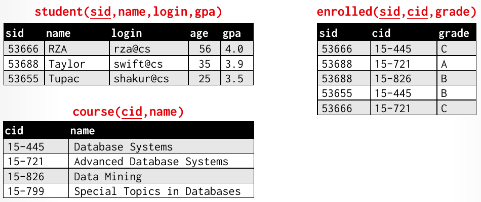
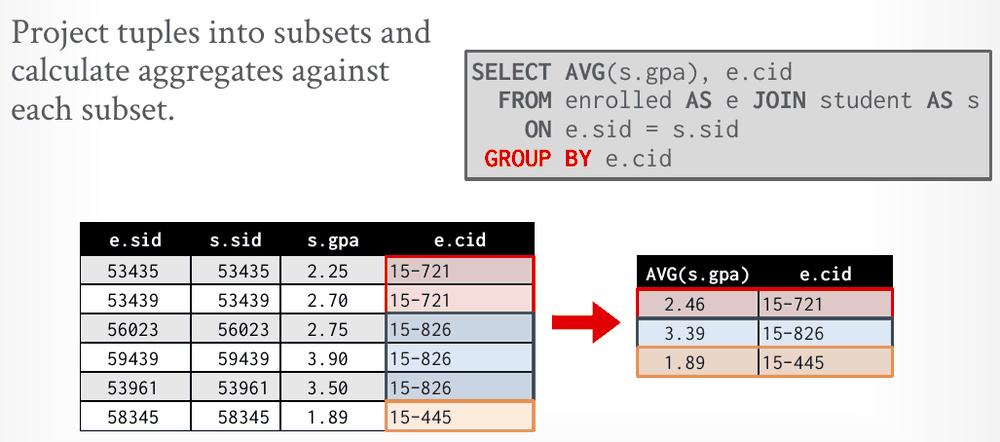
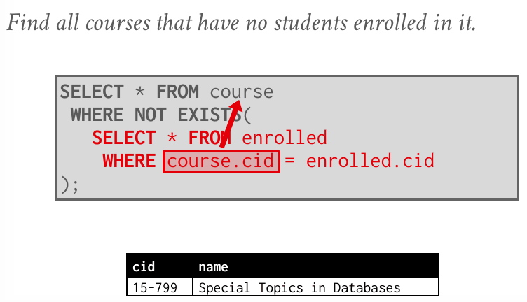
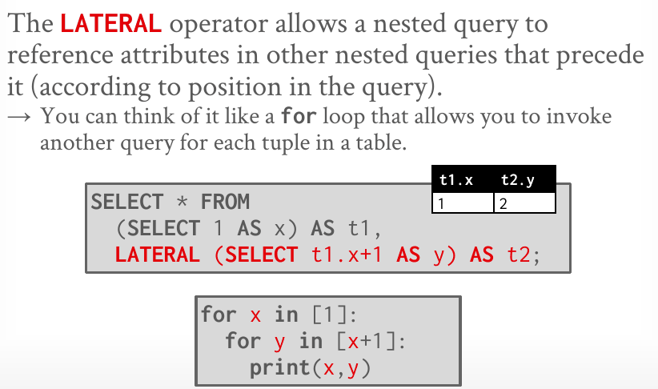
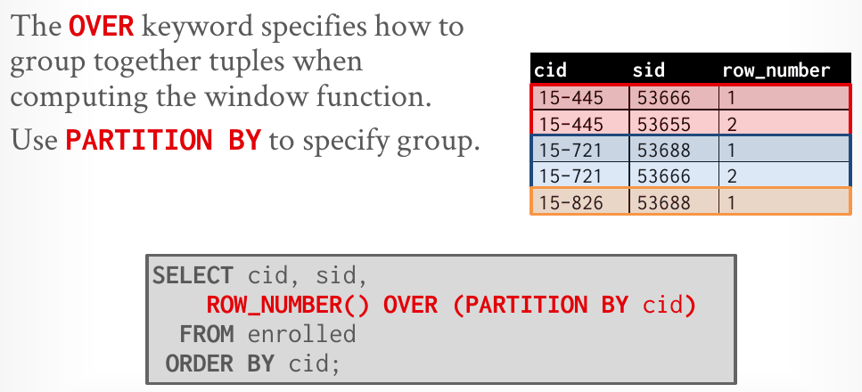

Database Internals in Go · Unit 0 · Lesson 2
Modern SQL
Write and predict the results of SQL queries that aggregate and group, join, nest subqueries, use lateral joins and CTEs, and rank rows with window functions, running each one in DuckDB.
Lesson 1's relational algebra spells out the steps of a computation; SQL states the answer and leaves the steps to the DBMS. Lecture #02 covers the parts of modern SQL that go beyond a single SELECT … WHERE: aggregation and grouping, nested and lateral queries, common table expressions and window functions. Most of them appear in CMU's Homework #1, which the next two lessons solve, and several return in Unit 6 as executors you'll write in Go: aggregation, joins, sorting, limits and window functions.
Which Go package of intro_to_db will hold the query executors you write for CMU's Project 3?
R = {(a1, 101), (a2, 102), (a3, 103)} and S = {(a3, 103), (a4, 104), (a5, 105)}. What is S − R?
Which part of a SQL query plays the role of relational algebra's select operator, σ?
Run along in DuckDB
CMU uses DuckDB for Homework #1 and describes it as a full-featured DBMS. A DuckDB database lives in a single file, which the duckdb command opens. Install it with Homebrew:
brew install duckdbSave the lecture's example database as school.sql:
CREATE TABLE student (
sid INT PRIMARY KEY,
name VARCHAR(16),
login VARCHAR(32) UNIQUE,
age SMALLINT,
gpa DOUBLE
);
CREATE TABLE course (
cid VARCHAR(32) PRIMARY KEY,
name VARCHAR(32) NOT NULL
);
CREATE TABLE enrolled (
sid INT REFERENCES student (sid),
cid VARCHAR(32) REFERENCES course (cid),
grade CHAR(1)
);
INSERT INTO student VALUES
(53666, 'RZA', 'rza@cs', 56, 4.0),
(53688, 'Taylor', 'swift@cs', 35, 3.9),
(53655, 'Tupac', 'shakur@cs', 25, 3.5);
INSERT INTO course VALUES
('15-445', 'Database Systems'),
('15-721', 'Advanced Database Systems'),
('15-826', 'Data Mining'),
('15-799', 'Special Topics in Databases');
INSERT INTO enrolled VALUES
(53666, '15-445', 'C'),
(53688, '15-721', 'A'),
(53688, '15-826', 'B'),
(53655, '15-445', 'B'),
(53666, '15-721', 'C');Then create the database file from the script, and open an interactive shell on it:
duckdb school.db < school.sql # creates school.db and runs the script
duckdb school.db # interactive prompt; end each statement with ; and press Ctrl-D to leaveType SHOW TABLES; at the prompt to confirm you have course, enrolled and student. The script is the DDL from the lecture notes with one change: gpa is DOUBLE rather than FLOAT, for a reason the HAVING section explains. Lesson 3 covers the DuckDB shell in more detail.

age column, which its header line leaves out (Lecture #02, slide 9).SQL in brief
IBM created its first relational query language, SQUARE, in 1971, then SEQUEL in 1972 for its System R prototype. SQL became an ANSI standard in 1986 and an ISO standard in 1987. The current standard is SQL:2023, and SQL-92 is the minimum a system must support to claim that it supports SQL. The language has three classes of commands:
- DML (data manipulation language):
SELECT,INSERT,UPDATE,DELETE. - DDL (data definition language): schema definitions for tables, indexes, views and other objects.
- DCL (data control language): security and access control.
Unlike the relational algebra of Lesson 1, SQL is based on bags, not sets. A bag (or multiset) is an unordered collection that allows duplicates. Removing duplicates costs work, so SQL keeps them unless you ask for DISTINCT.
Aggregates
An aggregate function returns a single value from a bag of tuples: AVG, MIN, MAX, SUM and COUNT. Aggregates can (almost) only appear in the SELECT output list, and one SELECT can hold several:
SELECT COUNT(*) AS cnt, MIN(gpa) AS lo, MAX(gpa) AS hi
FROM student WHERE login LIKE '%@cs'; -- 3 | 3.5 | 4.0COUNT(col)counts the values incol. A NULL is not a value, so it is skipped.COUNT(*)counts rows, NULLs or not. Slide 11 showsCOUNT(login),COUNT(*),COUNT(1)andCOUNT(1+1+1)all returning 3, but only because theWHEREclause has already removed every NULL login:LIKEapplied to NULL is never true.COUNT,SUMandAVGacceptDISTINCT, as inCOUNT(DISTINCT login), which counts each distinct value once.- Over zero rows,
COUNTreturns 0, whileAVG,SUM,MINandMAXreturn NULL.
Mixing an aggregate with an ordinary column is undefined, because there is no single cid to report next to one average:
SELECT AVG(s.gpa), e.cid
FROM enrolled AS e JOIN student AS s ON e.sid = s.sid;DuckDB rejects it: Binder Error: column "cid" must appear in the GROUP BY clause or must be part of an aggregate function. Most systems raise an error like this, but SQLite silently picks an arbitrary cid, which produces plausible-looking wrong answers. If an arbitrary value really is what you want, SQL:2023's ANY_VALUE(e.cid) says so explicitly.
GROUP BY and HAVING
GROUP BY projects tuples into subsets and computes the aggregates once per subset. The rule that fixes the error above: every non-aggregated column in the SELECT list must appear in the GROUP BY clause.
SELECT AVG(s.gpa), e.cid
FROM enrolled AS e JOIN student AS s ON e.sid = s.sid
GROUP BY e.cid
ORDER BY e.cid; -- 3.75 | 15-445, 3.95 | 15-721, 3.9 | 15-826
HAVING filters the groups after aggregation, "like a WHERE clause for a GROUP BY." WHERE runs earlier, on individual tuples before any group exists, so it can't test an aggregate: putting AVG(s.gpa) > 3.9 in the WHERE clause fails in DuckDB with WHERE clause cannot contain aggregates!. Slide 15 keeps the courses whose average GPA is above 3.9:
SELECT AVG(s.gpa) AS avg_gpa, e.cid
FROM enrolled AS e, student AS s
WHERE e.sid = s.sid
GROUP BY e.cid
HAVING AVG(s.gpa) > 3.9;Many systems, DuckDB included, also accept the alias, HAVING avg_gpa > 3.9. The notes point out that this is not standard SQL; the standard form repeats the aggregate, as above.
Grouping sets compute several groupings in one query instead of combining separate GROUP BY queries with UNION ALL, so the DBMS scans the data once. On the example database, GROUP BY GROUPING SETS ((c.name, e.grade), (c.name), ()) returns nine rows: five per course and grade, three per course, and one grand total of 5. NULL marks each column that a row rolls up.
Pitfall: FLOAT in DuckDB
The lecture notes declare gpa FLOAT. In DuckDB, FLOAT is a 4-byte floating-point type, so 3.9 is stored as 3.9000000953674316, and the HAVING query above also returns 15-826. With DOUBLE, as in school.sql, it returns 15-721 alone. When an answer hinges on an exact comparison, check the column types.
#02 Modern SQL, slides 10–15: aggregates, the undefined-column problem, GROUP BY, grouping sets and HAVING, worked on the example database.
Strings, ordering and limits
- SQL-92 strings are case-sensitive and take single quotes only. Systems differ: MySQL is case-insensitive and also accepts double quotes. In DuckDB, double quotes name an identifier, so
WHERE name = "Tupac"fails withReferenced column "Tupac" not found, andname = 'tupac'matches nothing. - In a
LIKEpattern,%matches any substring, including the empty one, and_matches exactly one character:login LIKE '%@c_'matches all three students. - String functions such as
SUBSTRING,UPPERandLOWERwork in both the output and predicates. The standard concatenation operator is||(MSSQL uses+and MySQLCONCAT()):WHERE login = LOWER(name) || '@cs'returns RZA. Date and time functions exist too, but their syntax varies wildly between systems. ORDER BY col [ASC|DESC]sorts the output;ASCis the default. Extra sort keys break ties, and any expression can be a sort key.LIMIT n OFFSET mis the common syntax, and DuckDB uses it. The standard spelling isFETCH FIRST n ROWS ONLYwithOFFSET n ROWS; DuckDB accepts that too, but rejects the standard'sFETCH FIRST n ROWS WITH TIES. Without anORDER BY, a limited query may return different tuples on each run, because relations have no order.
SELECT sid, name, gpa FROM student
ORDER BY gpa DESC LIMIT 2; -- 53666 RZA 4.0, then 53688 Taylor 3.9A query can also store its result in a table instead of returning it. The SQL-92 form SELECT DISTINCT cid INTO CourseIds FROM enrolled fails in DuckDB (SELECT INTO not supported!), but CREATE TABLE CourseIds AS SELECT DISTINCT cid FROM enrolled; works. To add rows to a table that already exists, use INSERT INTO CourseIds (SELECT DISTINCT cid FROM enrolled);. The query's columns must match the table's in number and type; their names can differ. You'll need INSERT … SELECT for the homework's last question.
Joins
Lesson 1's join is written in the FROM clause, usually with an explicit condition:
SELECT s.name, e.cid
FROM student AS s JOIN enrolled AS e ON s.sid = e.sid;This returns five rows, one per enrolled tuple: RZA and Taylor appear twice each, because each has two matching enrollments. AS gives each table a short alias for the rest of the query.
The comma form, FROM student AS s, enrolled AS e WHERE s.sid = e.sid, returns the same five rows. The notes call it legacy implicit join syntax and recommend writing explicit joins. Without the WHERE predicate it is the product: 3 × 5 = 15 rows.
Because SQL keeps duplicates, SELECT s.name from that join gives RZA, RZA, Taylor, Taylor, Tupac, and SELECT DISTINCT s.name gives the three names once each. Whenever one side has several matching rows, the join repeats the other side's columns, so decide whether you want those repeats.
Nested queries
A nested query (or subquery) is a query inside another query. The inner query can appear almost anywhere in the outer one: in the SELECT list, in FROM, or in WHERE. The inner query can reference the outer query's attributes, but not the other way round. Nested queries are often difficult to optimize.
-- names of the students enrolled in 15-445: RZA, Tupac
SELECT name FROM student
WHERE sid IN (SELECT sid FROM enrolled WHERE cid = '15-445');
-- a subquery in the SELECT list, evaluated for each enrolled row
SELECT sid, (SELECT name FROM student AS s WHERE s.sid = e.sid) AS name
FROM enrolled AS e;Four operators connect a predicate to a subquery's result:
ALL: the expression must be true for every row of the subquery.ANY: it must be true for at least one row.IN: equivalent to= ANY().EXISTS: true if the subquery returns at least one row.
Slide 26 finds the student with the highest id among those enrolled in at least one course, in several equivalent ways. All of them return 53688, Taylor:
SELECT sid, name FROM student
WHERE sid = (SELECT MAX(sid) FROM enrolled);
SELECT student.sid, name
FROM student
JOIN (SELECT MAX(sid) AS sid FROM enrolled) AS max_e
ON student.sid = max_e.sid;The second form joins with a derived table: a subquery in FROM, given a name with AS. A subquery that references the outer query's attributes is a correlated subquery. Conceptually it is re-evaluated for each outer tuple:

course.cid refers to the outer query's current course, so the inner query runs once per course; only 15-799 has no enrolled tuples (Lecture #02, slide 27).Pitfall
Drop the correlation predicate and the subquery no longer depends on the outer row. NOT EXISTS (SELECT * FROM enrolled) is false for every course, so the query returns nothing; EXISTS (SELECT * FROM enrolled) is true for every course and returns all four.
Lateral joins
An ordinary subquery in FROM can't see the other tables in the same FROM clause. LATERAL lifts that restriction: a lateral subquery can reference attributes of the FROM items that precede it. The lecture compares it to a for loop that runs another query for each tuple:

t1.x from the item before it, just as the inner loop uses the outer loop's variable (Lecture #02, slide 28).Slide 29 uses two lateral subqueries to compute, for each course, the number of enrolled students and their average GPA:
SELECT * FROM course AS c,
LATERAL (SELECT COUNT(*) AS cnt FROM enrolled
WHERE enrolled.cid = c.cid) AS t1,
LATERAL (SELECT AVG(gpa) AS avg FROM student AS s
JOIN enrolled AS e ON s.sid = e.sid
WHERE e.cid = c.cid) AS t2
ORDER BY cnt ASC;Run it and look at the row for 15-799; a question at the end of the lesson asks about it. The lecture notes print this query without the comma before the first LATERAL, and DuckDB rejects that version with a syntax error.
A lateral subquery with ORDER BY … LIMIT 1 picks one tuple per outer tuple, for example each course's best-GPA student:
SELECT c.cid, best.name, best.gpa
FROM course AS c,
LATERAL (SELECT s.name, s.gpa
FROM enrolled AS e JOIN student AS s ON s.sid = e.sid
WHERE e.cid = c.cid
ORDER BY s.gpa DESC, s.name
LIMIT 1) AS best
ORDER BY c.cid;
-- 15-445 | RZA | 4.0
-- 15-721 | RZA | 4.0
-- 15-826 | Taylor | 3.915-799 is missing from this output. Its subquery returns zero rows, and pairing a tuple with zero rows produces nothing, just as R × S is empty when S is empty.
#02 Modern SQL, slides 23–29: nested queries with IN, ANY, ALL and EXISTS, the highest-id example, correlated NOT EXISTS, and lateral joins.
Common table expressions
A common table expression (CTE) gives a name to a temporary result that the rest of the same query can reference: in the notes' words, a temporary table scoped to a single query. CTEs are an alternative to nested queries, views and explicit temporary tables. You can name the output columns before AS, and one WITH can declare several CTEs, separated by commas:
WITH cteName (col1, col2) AS (
SELECT 1, 2
)
SELECT col1 + col2 FROM cteName; -- 3
WITH maxCTE (maxId) AS (SELECT MAX(sid) FROM enrolled)
SELECT name FROM student AS s
JOIN maxCTE ON s.sid = maxCTE.maxId; -- TaylorIn the homework, CTEs let you compute a long answer one named step at a time and combine the steps at the end.
With WITH RECURSIVE, a CTE can reference itself. The notes point out that this makes SQL provably Turing-complete. Their example counts from 1 to 10:
WITH RECURSIVE cteSource (counter) AS (
(SELECT 1)
UNION
(SELECT counter + 1 FROM cteSource WHERE counter < 10)
)
SELECT * FROM cteSource;Window functions
A window function performs a calculation across a set of tuples related to the current tuple, without collapsing them into a single output tuple, which is how SQL supports running totals, ranks and moving averages. The syntax is FUNC-NAME(…) OVER (…), and the function can be:
- any aggregate function from earlier in this lesson;
ROW_NUMBER(), the number of the current row;RANK(), the order position of the current row. Tied rows share a rank and the next rank is skipped (1, 2, 2, 4), whereasROW_NUMBER()never repeats (1, 2, 3, 4).
The OVER clause says how to group tuples for the computation. PARTITION BY specifies the groups, and an ORDER BY inside OVER sorts the entries within each group:

GROUP BY. Without an ORDER BY inside OVER, the order in which each partition is numbered is unspecified; the notes recommend adding one for deterministic results (Lecture #02, slide 36).The notes describe the conceptual execution in four steps: partition the table, sort each partition (if there is an ORDER BY), build a window of related records for each record, and compute the output for each window. Slide 38 uses RANK() to find the student with the second-highest grade in each course:
SELECT * FROM (
SELECT *, RANK() OVER (PARTITION BY cid
ORDER BY grade ASC) AS rank
FROM enrolled) AS ranking
WHERE ranking.rank = 2;The sort is ascending because the grades are letters: A sorts before B, so the best grade comes first. The rank is computed in a derived table and filtered outside it because a window function can't appear in WHERE: DuckDB rejects that with WHERE clause cannot contain window functions!. Unit 6 has you implement window functions as a Go executor for Project 3.
GROUP BY cid is like folding the rows into a map[string]stats keyed by course and emitting one row per key. AVG(gpa) OVER (PARTITION BY cid) computes the same per-course value but writes it back onto every original row, so five rows go in and five rows come out.
#02 Modern SQL, slides 30–38: common table expressions, recursive CTEs, and window functions with PARTITION BY, ORDER BY and RANK.
One statement per answer
The lecture closes with advice: "You should (almost) always strive to compute your answer as a single SQL statement." It follows from Lesson 1: a single declarative statement hands the DBMS the whole problem, so it can choose the steps for all of it. Homework #1 enforces the advice, since every answer must be a single statement.
Check your understanding
s2(sid, login) holds (1, 'rza@cs'), (2, NULL), (3, 'swift@cs') and (4, 'swift@cs'). What does SELECT COUNT(*), COUNT(login), COUNT(DISTINCT login) FROM s2; return?
On the example database, with gpa stored as DOUBLE, which rows does this query return? SELECT AVG(s.gpa) AS avg_gpa, e.cid FROM enrolled AS e, student AS s WHERE e.sid = s.sid GROUP BY e.cid HAVING AVG(s.gpa) > 3.9;
In slide 29's query (each course c, a lateral COUNT(*) AS cnt and a lateral AVG(gpa) AS avg), what are cnt and avg for 15-799, which has no enrolled students?
On the example database, which rows does slide 38's query return? SELECT * FROM (SELECT *, RANK() OVER (PARTITION BY cid ORDER BY grade ASC) AS rank FROM enrolled) AS ranking WHERE ranking.rank = 2;
scores(name, pts) holds (A, 30), (B, 20), (C, 20) and (D, 10). For D, what are RANK() OVER (ORDER BY pts DESC) and ROW_NUMBER() OVER (ORDER BY pts DESC, name)?
WHERE and when in HAVING, what makes a subquery correlated, what LATERAL adds to an ordinary subquery in FROM, or how RANK() and ROW_NUMBER() differ on ties. Ask your teacher (me) before moving on.
Primary sources: CMU 15-445/645 Fall 2025 Lecture #02, slides and notes. Query results and error messages are from DuckDB 1.5.6 on the example database above.